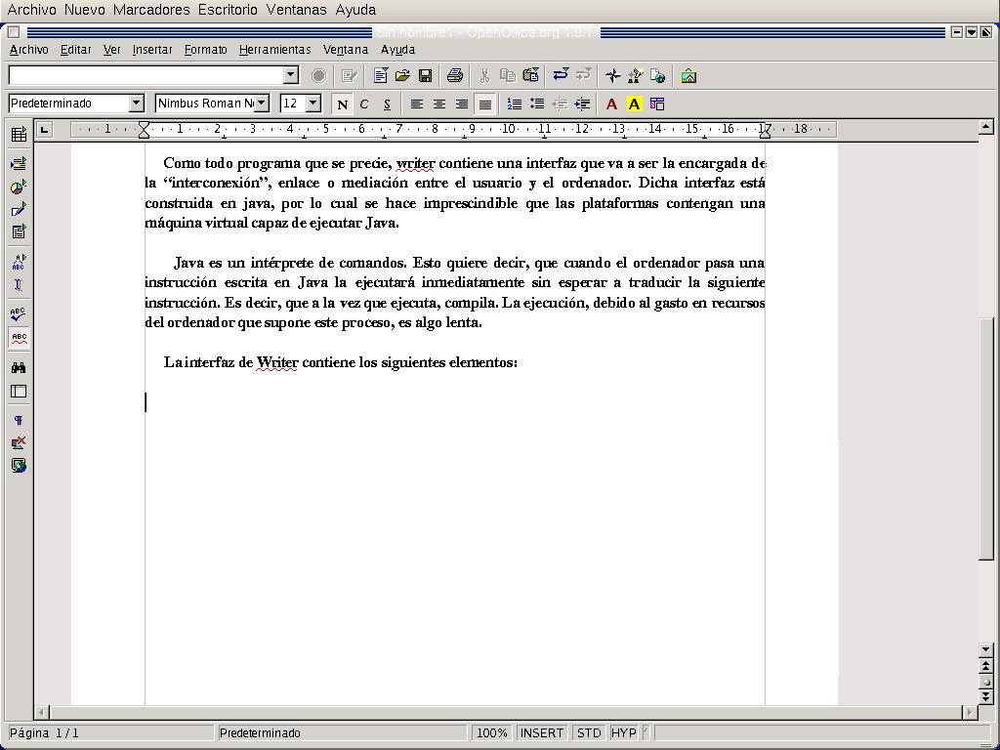
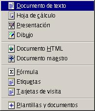
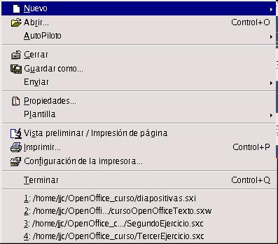
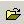
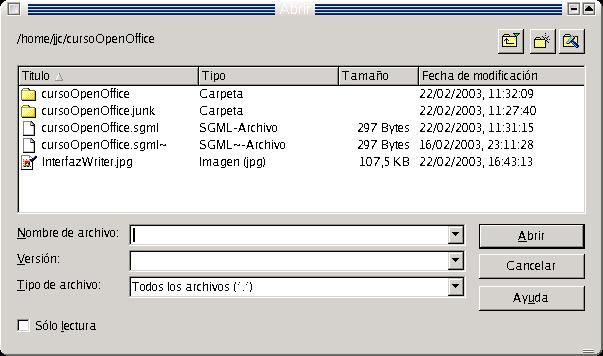
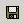
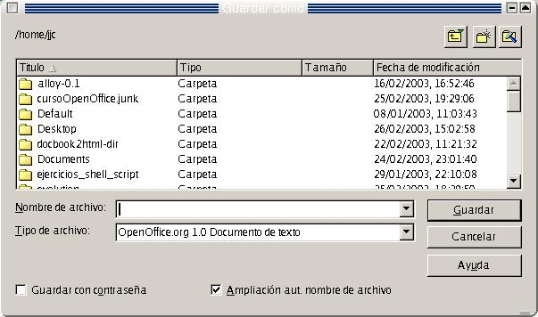
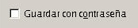
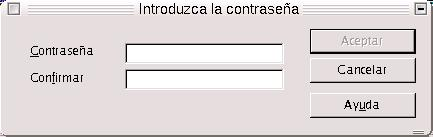
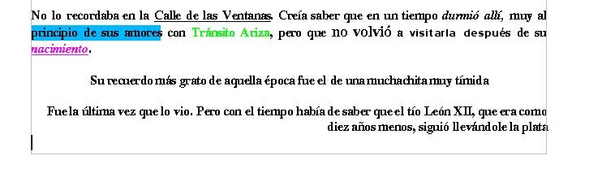

| Herramientas en GNU/LINUX para estudiantes universitarios: La suitte ofimática OpenOffice.org 1.0.1 | ||
|---|---|---|
| Anterior | Siguiente | |
Lo podríamos considerar como el programa estrella de OpenOffice.org, dedicacdo dentro de la siutte al tratamiento de textos. Es un programa de Software Libre GNU, lo cual quiere decir que se puede usar de forma gratuita, bajo las plataformas Linux, Windows y Mac. Se considera como la versión libre de StarOffice 6.0
El entorno de trabajo contiene los siguientes elementos:

En la barra de herramientas nos vamos a encontrar distintos botones que van a contener distintas funciones, las más esenciales, relacionadas con el documento actual con el que vamos a trabajar. Dichas funciones son las más importantes que nos vamos a encontrar a la hora de trabajar con un documento de texto, que van a ser insertar, editar, revisar ortográficamente, buscar textos o palabras, realizar trabajos con bases de datos y modos de visualización del diseño.
En la barra de funciones nos encontraremos con una serie de botones encargados de realizar tareas de mantenimiento, como pueden ser por ejemplo, guardar, abrir otro documento, abrir nuevo documento, impresión, deshacer/rehacer, o galería de dibujos.
En la barra de funciones, están aquellos botones que contienen funciones específicas para la edición del documento. Son funciones tales como aplicar estilo, nombre de la fuente, subrayado, negrita, itálica, alineación, edición de párrafo, color de texto y color de fondo de texto y de párrafo.
La barra de menús contiene todos aquellos menús que permiten que el usuario pueda trabajar con todas la funcionalidades que contiene OpenOffice.org
Otro elemento es la regla, con la cual podemos trabajar con las distintas posiciones del texto. Gracias a ella podemos hacer tabulaciones y sangrías, colocando los textos en las posiciones en que más nos convengan.
La barra de estado es la que contien la información más relevante sobre aquel texto con el que estemos trabajando. En ella se incluye el número de página, la escala, el funcionamiento del modo insertar (ON/OFF) y del modo Hiperenlace, además de poder contener la hora y fecha del sistema.
El aspecto es muy similar al de cualquier procesador de textos, y esto da la ventaja de que permite un fácil manejo de la aplicación, además de un sencillo aprendizaje.
Cuando abrimos OpenOffice.org writer, sin dar ninguna opción desde la línea de comandos del Linux o desde la ventana de MS-DOS en Windows, lo primero que hace es abrirse con la zona de trabajo completamente vacía, como si fuéramos a editar un documento nuevo. En este caso podemos empezar a escribir un nuevo documento que podemos guardar si lo deseamos.
Si estamos trabajando con un documento, y deseamos abrir uno nuevo, lo que podemos hacer es lo siguiente:
Ir a la barra de objetos, pulsar "nuevo", y nos abre un cuadro flotante de diálogo, en el que podemos seleccionar el tipo de documento nuevo que deseamos crear.

Ir a la barra de menús, seleccionar Archivo-->Nuevo-->Documento de texto

En ambos casos, el resultado será la apertura de un nuevo entorno de trabajo
Se denomina al proceso de abrir un documento como el hecho de llamarlo o invocarlo, estando este accesible localmente por medio de nuestro disco duro, disquete o CD-ROM, o bien de forma remota en una red
Podemos abrir un documento de dos formas:
Bien con el uso del teclado, pulsando CTRL-O
Pulsando el botón "Abrir Archivo" de la Barra de Herramientas

En ambos casos, el resultado es la apertura del siguiente cuadro de diálogo:

Para guardar un documento cualquiera, procedemos de la siguiente forma:
Para guardar un documento nuevo, que no se haya creado previamente, se puede hacer pulsando desde el teclado CTRL-S. También se puede hacer pulsando Guardar Documento en la Barra de Objetos. En ambos casos el resultado es la aparición del cuadro de diálogo Guardar Documento
Para guardar cualquier documento que se haya creado previamente, basta con pulsar sobre el botón Guardar Documento situado en la Barra de Objetos. Aunque el cuadro de diálogo de Guardar Documento no aparece, las modificiaciones que se hayan hecho al mismo quedarán guardadas.

El aspecto del cuadro de diálogo Guardar Documento es el siguiente:

Para guardar el documento se ha de indicar el nombre del mismo y después pulsar sobre Guardar
A la hora de guardar cualquier documento, hemos de indicar el formato en que queremos hacerlo. OpenOffice soporta numerosos formatos, entre los que se encuentra.doc, que permite la visualización de documentos hechos en OpenOffice.org writer, en el procesador de textos Word
Si queremos que un texto se pueda visualizar en el procesador word, tenemos que indicarle que lo guarde en formato.doc, dentro de la lista Tipos de Archivo
Cuando guardamos el documento, podemos protegerlo para que otros usuarios no lo puedan abrir.

Si nos fijamos en el cuadro de diálogo Abrir Documento, abajo a la izquierda hay una casilla de opción, Guardar con contraseña. Si activamos dicha casilla, cuando guardemos el documento se desplegará una ventana donde se escribirá la contraseña y se pide confirmación.

Posteriormente, sólo se podrá abrir dicho documento cuando se introduzca la contraseña correcta, en la ventana en que se solicite al abrir dicho documento.
Vamos a trabajar con la barra de objetos en el siguiente ejercicio. Recordar, que para seleccionar una palabra, situamos el cursor sobre la misma y presionamos con doble click el botón izquierdo del ratón. La línea de textos se selecciona con un triple click cosbre la misma. Para marcar porciones de textos de forma alterna, seleccionarlas pulsando CTRL, y seleccionando el texto de forma alternada con el botón izquierdo del mouse.
Realizar los pasos necesarios de tal forma que queremos que el texto quede de la siguiente forma:

También, cuando trabajo con un documento, puedo aplicar una serie de formatos. Podemos hablar de formatos en tres niveles, a nivel texto, párrafo o página. El nivel será distinto según a quie quiera aplicar dicho formato
Las opciones que aparecen en los cuadros de diálogo serán distintas según a quién aplique dichos formatos
Ejercicio:
Hacer el mismo ejercicio de antes, usando Formato-->Carácter y Formato-->Párrafo